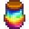

Prismatic Jelly
| Prismatic Jelly | |
|  | |
| Harvested from the rare and elusive prismatic slime. | |
| Information | |
| Source | Prismatic Slimes (100% drop) |
| Sell Price | Cannot be sold |
Prismatic Jelly will always drop from killing non-special Prismatic Slimes. They are only obtainable while the Wizard's "Prismatic Jelly" Special Order quest is active.
Only one Prismatic Jelly is required for the Special Order, and any not handed to the Wizard will disappear once the order is complete or expired.
While the special order is active, each slime spawned in The Mines, Quarry Mine, or Skull Cavern has a 1.2% chance to be replaced with a Prismatic Slime, depending on daily luck. The exact chance is 0.012 + Daily Luck / 10.0 [1]. However, the chance cannot drop below 0.01.
Trivia
- It is possible for a Prismatic Slime to be a special slime. In this case, the Prismatic Slime will only drop one of the special items and will not drop the intended Prismatic Jelly.
- PC only: Prismatic Jelly can be spawned using the item ID glitch and gifted as a universally hated gift.
- When killing a Prismatic Slime while wearing the Burglar's Ring, the slime will drop two Prismatic Jellies.
- Since the Quarry Mine is reset at the end of the day, instead of when leaving the floor like in the Mines or Skull Cavern, a prismatic slime spawned there will persist for the entire day. If the player passes out from low health, the Quarry Mine can be revisited for another chance to kill the prismatic slime.
References
- ↑ See Locations.MineShaft::populateLevel in the game code.
History
- 1.5: Introduced.
- 1.5.3: Prismatic Slimes are now more common (1.2% chance, up from 0.8%), and their spawn rate is now affected by daily luck.
- 1.6: Reduced the maximum possible effect a bad luck day can have on finding a prismatic slime.